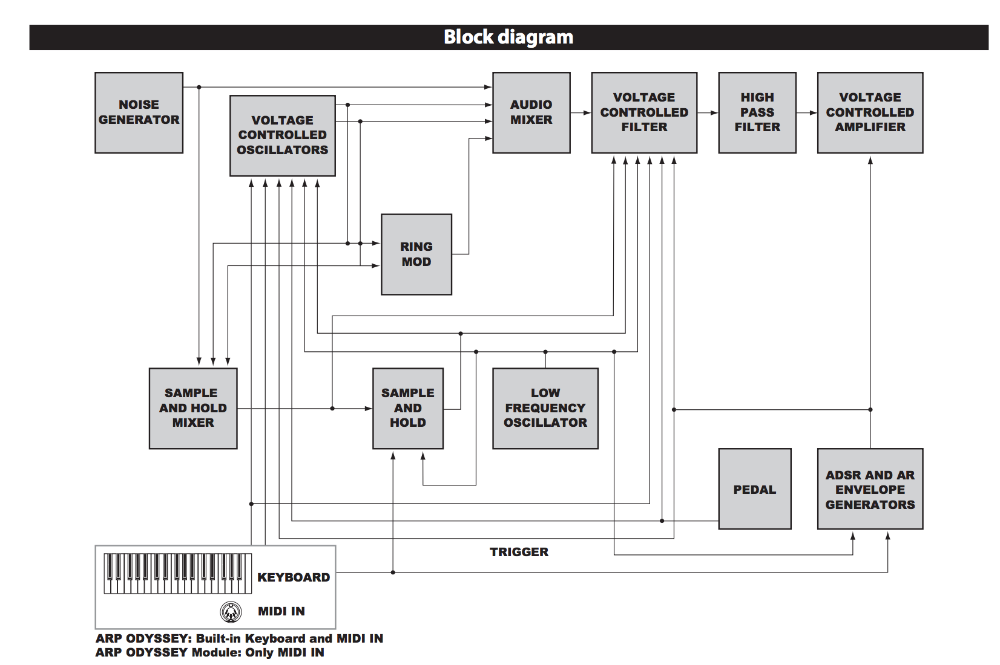

Repaso
- Bucle for
- Condicionales if, elif, else
Contenidos
- Modularidad
- Funciones
- Pseudocódigo
- Buenas prácticas
- Bibliotecas externas con pip
- Proyecto final del curso

Diagrama de bloques sintetizador ARP
Sintetizador modular Moog
#sintaxis para definir funciones
#def nombreFuncion(parametros):
#cuerpo de la funcion
#ejemplo
def laUno():
print "hola"
#ejecutar la funcion
laUno()
#sintaxis para definir funciones
#def nombreFuncion(parametros):
#cuerpo de la funcion
#otro ejemplo
def laDos(mensaje):
print "preparados..."
print 3 + 4
print mensaje
print "ok bye"
#ejecutar la funcion
laDos("hola que tal")
#sintaxis para definir funciones
#def nombreFuncion(parametros):
#cuerpo de la funcion
#otro ejemplo
def laTres(mensaje, veces):
for i in range(veces):
print mensaje
#ejecutar la funcion
laTres()
# sintaxis para definir funciones
# def nombreFuncion(parametros):
# cuerpo de la funcion
# otro ejemplo
# convierte el dinero que recibes
# en montos brutos y liquidos
def efectivoALiquido(efectivo):
liquido = efectivo / 0.9
return liquido
# llamar a la funcion
monto = efectivoALiquido(efectivo)
# imprimir resultado
print monto
# los comentarios en Python se hacen con #
# el pseudocódigo es escribir de manera agnóstica
# el pseudocódigo es la luz
# escribir pseudocódigo en diseño top-down
# dividir para conquistar
# definir variables, funciones, interdependencias
# definir etapas, jerarquizar por importancia y urgencia
Módulos interesantes
- Comentar
- Partir por el pseudocódigo
- Control de versiones
- Funciones y variables
- Programar con alguien
- Preguntar dudas en stackoverflow
Discusión: proyecto final